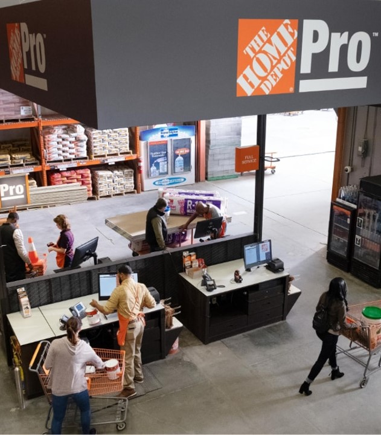

Zone-A Redesign
Evaluating The Home Depot's product pages above the fold to ensure it continues to meet customer shopping needs.

Project Overview
Home Depot's online customer shopping experience needed their product pages to be re-evaluated to ensure it was continuing to meet customer needs. To help achieve this business goal, I led a research study end-to-end where I conducted closed card sort with Home Depot customers that helped assess what pieces of content was most to least important for customers to see when shopping online via these product pages.
Ultimately, the results from this research project helped the UX Design team create a new Zone A experience that results in an increase in conversion and decrease in bounce and exit rates metrics.
COMPANY
The Home Depot
ROLE
UX Researcher
DURATION
May - Aug 2021
METHODOLOGY
Unmoderated Closed Card Sort
Context
The Home Depot shopping website has what is called Product Information Pages (PIPs) which are pages that customers use to help them to learn more about a product and its features. The area above the fold on this page is called Zone A, one of the most important places on these kinds of pages due to how customers usually don't scroll past this part of the page.

The Problem
A multitude of different teams across the company owned different content types. For example, one team owned anything discount or sales related, while another team owned the experience of choosing a fulfillment method (Get it shipped, Pick up in store, etc.) These teams were constantly placing their respective content in this Zone A of the page to the point of it being cluttered and not customer-informed. It needed governance and reevaluation. So, the Zone A Redesign Project was born.
Business & UX Goals
- simplify the experience based on customer feedback
- optimize the page’s performance
- create consistent look and feel with other experiences in the site.
Research Objective
Before redesign efforts could begin, the research study that was proposed sought to assess the importance and order of distinct content found in Zone A to align with customer needs.
Study Design
An unmoderated closed card sort was conducted where customers first sorted pieces of Zone A content into 2 groups, called “Important” vs “Trash Bin”. Then, customers were instructed to rank the items in the "Important" group from most to least important to their shopping needs.

Method Choice Rationale: Closed card sorting can be used to assess existing information architectures, so this method was the right approach in that research we were doing was to assess the information architecture of Zone A items on PIPs. By doing it remotely and unmoderated, we were also able to quickly evaluate Zone A’s from different category types of PIP.
Choosing Assets
We needed to account how different content is displayed to customers depending on category and/or price. For example, if you are shopping for mulch online, you might see a calculator that will help you determine how much mulch you'll need to purchase. You don't see a calculator when shopping for a power drill.
We also needed to account for price. For example, you may see a credit card offer higher on the page for a $2,000 fridge, compared to shopping for a $7 hammer.
With that in mind, we had customers evaluate content for 8 different product pages: mulch, power drill, dresser, fan, plater, lawn mower, hammer, and outdoor grill. We ultimately had 45 customers evaluate a given product pages' content on Zone A.
Target Audience
We had 360 participants in total that took part in the study, where:
- 8 groups of 45 customers each were presented with a different product page (mulch, grill, etc.)
- they regularly shop with the Home Depot
- they were intending to shop for the given product soon.
Analysis
My analysis process involved averaging the results from each product page study instance into one source (table) via Microsoft Excel.

Recommendations
I made recommendations around what order customers should see content on product pages and what content is not necessary to display to customers at all. The recommendations are as follows:
Necessary Content
- Product Image
- Product Price
- Product Name
- Product Info
- SKU (if present)
- Star Rating
- Brand
- How to Get It
- Quantity
- Add to Cart

Not Critical Content
- Share
- Write a Review
- Instant Checkout
- Shop the Collection

Impact

After the results were disseminated, the UX Design immediately iterated and created a new version of the product pages (via design sprints) that then received moderated usability testing. Launch of the new design went live in August 2021.
Metrics Impact
- Home décor pages ATC conversion +40bps
- General Merchandise pages ATC conversion went up +18bps
- Bounce & Exit rate metrics also trended in a downward fashion
Reflection

What could have gone better?
- I could have dedicated time to watching (some) the videos to pair qualitative insights with the collected quantitative data.
- It was a tedious process to create 32 unmoderated studies on UserTesting to collect the data (limit 15 tests per study)
- Next time: Find budget to collect data more efficiently through Optimal Sort’s panel
Positives
- I was able to juggle this project alongside another superlarge scale benchmarking project
- I worked closer than ever with a group of incredibly talented UX designers
- I able to work on such a widely visited part of the site experience.